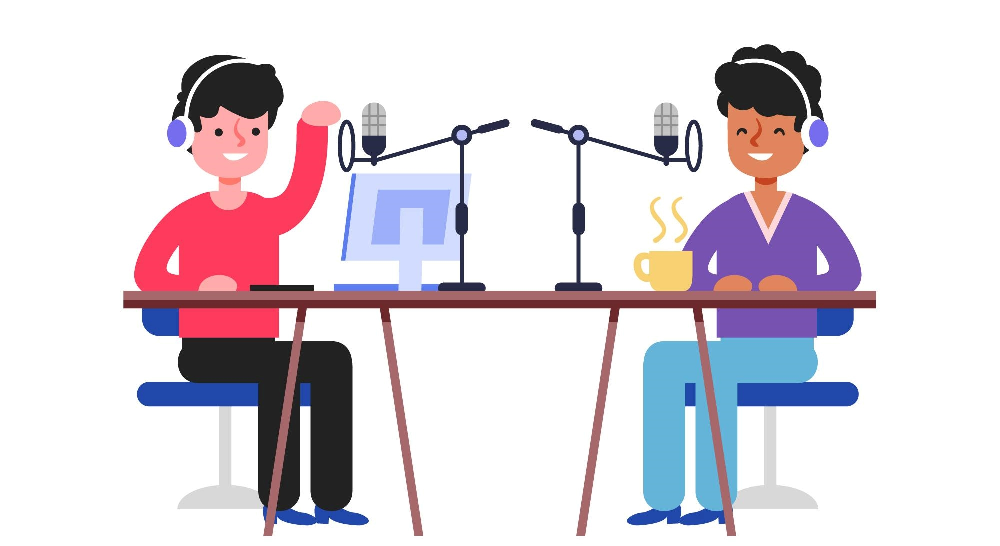

Nuestra ficción sonora
Durante las anteriores secuencias, nos hemos adentrado en el mundo del teatro, hemos conocido algunas de sus características fundamentales y nos hemos acercado al teatro del S.XVII. Ya ha llegado el momento de comenzar a preparar nuestra ficción sonora para Picasso FM.

Ilustración de Freepik
Nuestros objetivos en esta parte final del proyecto son:
- Reescribir un texto teatral con las adaptaciones necesarias.
- Diferenciar diálogos de acotaciones.
- Crear una ambientación sonora adecuada.
- Grabar una obra de radioteatro.
- Colaborar en el trabajo en equipo.
Para esta tarea, ponemos en juego todo lo que hemos aprendido hasta aquí y, por supuesto, nuestra creatividad y nuestra capacidad de aprender colaborando y compartiendo. Pero lo primero será comprender qué entendemos por radioteatro y ficción sonora. ¿Qué son? ¿En qué se parecen? ¿En qué se diferencian? Leed la información de los enlaces en grupo y realizad un mapa mental en el que queden claros ambos conceptos y sus relaciones.
En clase, veamos un fragmento de esta producción sonora de RTVE sobre el texto "Alicia en el país de las maravillas", de Lewis Carrol:
Suena bien, ¿verdad? En los siguientes enlaces podéis acercaros a este fenómeno radiofónico que ha recuperado el radioteatro en formato podcast:
- Ficción sonora de RTVE
- Ficción sonora de Onda Cero
- Ficción sonora de Cadena SER
- Ficción sonora de COPE
- Ficción sonora "La firma de Dios", de Podium podcast
- Para saber más...